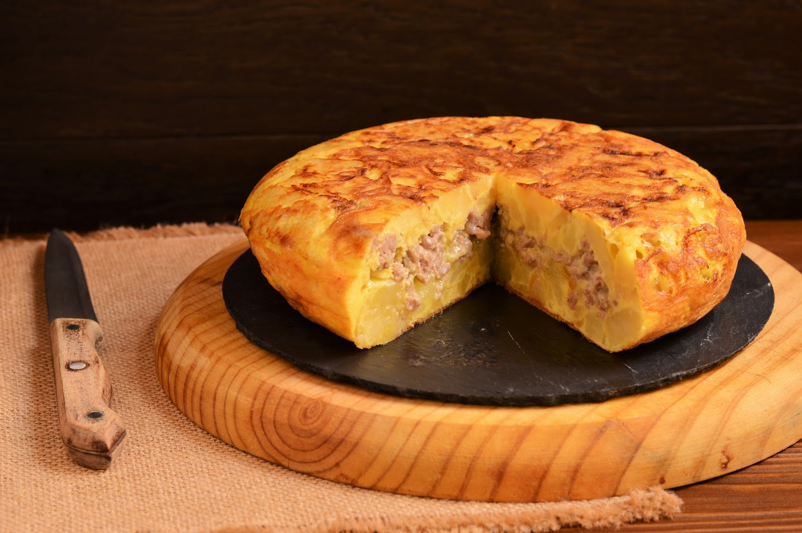

Receta de tortilla de patata.
Lista de ingredientes.
- Aceite
- Patatas
- Huevos
- Cebolla
Enlace a Pagina2
Instrucciones.
- Pela las patatas y pícalas en rodajas o gajos no muy delgados.
- Pica la cebolla en julianas.
- Caliente una sartén antiadherente grande, donde quepan todos tus ingredientes con abundante aceite de oliva.
- Echa las patatas y cocínalas a fuego medio durante 5 minutos. A continuación agrega las cebollas. Baja el fuego un poquito más y ponle la tapa. Cocina todo junto por media hora, revolviendo de vez en cuando, hasta que la patata esté suave y ligeramente dorada.
- La cebolla debería estar transparente, casi amarilla, pero no de color marrón.
- Saca la mezcla de patatas y cebolla y ponla en un recipiente plástico grande.
- En este momento vas a agregarle la sal a tu gusto y vas a revolver para que se distribuya uniformemente.
- Pica todos los huevos en otro recipiente plástico más pequeño y bátelos bien.
- A continuación echa los huevos junto a las patatas y la cebolla y revuelve todo.
- Ahora vas a terminar de hacer la tortilla. Lo que necesitas es que la mezcla cuaje y coja la apariencia correspondiente, mira las fotos.
- En la misma sartén que usaste para freír los ingredientes pon un chorro de aceite de oliva y echa la mezcla. Deja cocinar durante 1 minuto.
- A continuación voltea la tortilla. Ayúdate con la tapa de la sartén o con un plato grande, de manera que simplemente le des la vuelta a la sartén, sobre la tapa y luego empujes cuidadosamente la tortilla de vuelta al sartén para que se cocine por el otro lado.
- Deja que se cuaje la tortilla por 1 minuto más.
- Ahora simplemente apaga el fuego y retira con cuidado tu tortilla de patatas de la sartén. Puedes ponerla en un plato grande, en una bandeja o en una tabla de madera.
TORTILLA
